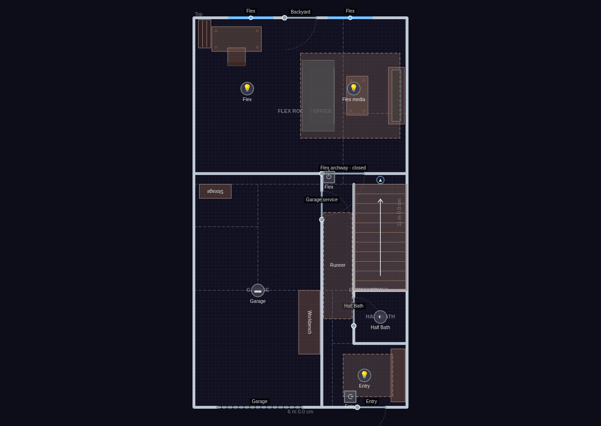
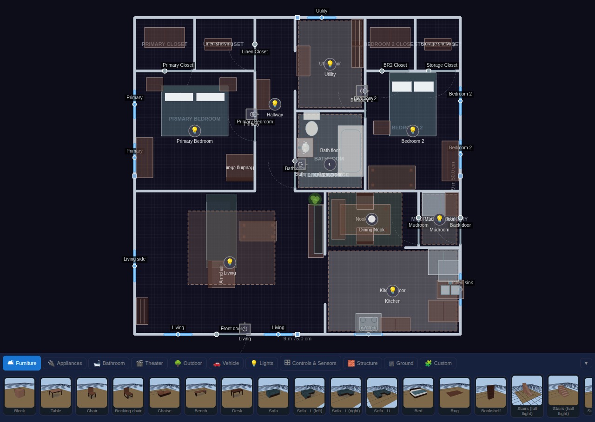
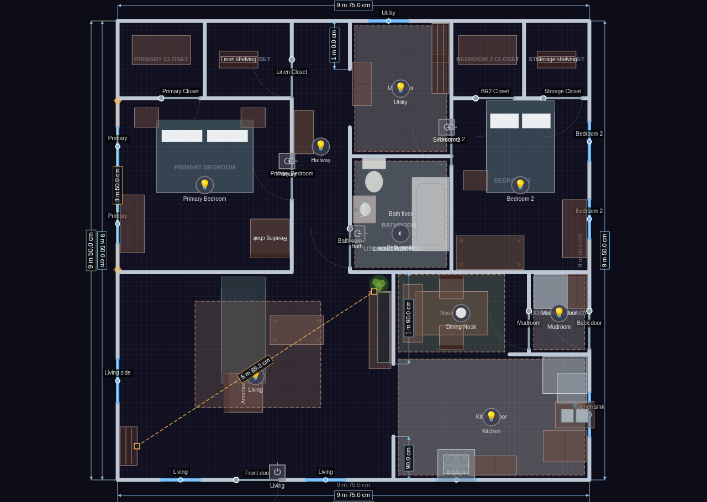

The 2D editor#
The 2D editor is where you build your home: draw walls, place rooms, drop in furniture and devices, and lay everything out to match your real floor plan. Switch to it any time with the 2D view toggle in the topbar. The left sidebar holds every tool and a section for each kind of thing you've placed.
Everything you build here is shared through Home Assistant, so every browser and tablet sees the same home.
Floors#
The levels of your home live in two places in the sidebar. Floors at the very top is a slim, always-open picker — one row per floor with its name and size — and Floor tools just below it acts on whichever floor you've picked.
- Switch floors by clicking a row in the picker. The list reads like an elevator panel: the highest story is at the top. Your pan and zoom are kept, because every story shares one world coordinate frame — so a bathroom stays under your cursor as you flip between levels. (The view re-frames only when the new floor is a very different size.)
- Add, rename, resize, or delete a floor in Settings ▸ Floor Plan, which lists every floor with editable name and width / depth boxes.
- Reorder with Order ▲ Up / ▼ Down in Floor tools. The order you set is used everywhere: the kiosk floor picker, cross-floor stair links, and the stacking of glass-house ghost floors.
- Yard fill and the "this floor only" look overrides (floor color, texture, wall color) are in Floor tools too, along with everything else on this page's floor topics — visibility, elevation, the Home Assistant floor binding, and rotating or moving the plan.
Show, peek & hide#

Visibility in Floor tools is a three-state button you click to cycle:
| State | Button | What it means |
|---|---|---|
| Show | 👁 | Normal. |
| Peek | a peeking-monkey glyph | The floor is fully live, and while you're editing another floor its walls trace over your plan as a faint dashed onion-skin underlay — so you can line a bathroom up with the one below it. |
| Hide | 🙈 | The floor stays fully editable but drops out of the live experience — it disappears from the kiosk floor picker, ghost-floor stacking, and cross-floor tracking. Handy for keeping test iterations of a plan side by side. Hidden rows dim and show a hint. |
Peek shows structure only (walls, no furniture) and works in every mode. In 3D, glass-house mode already shows the other floors, so peek is a 2D feature. The Peek floors layer hides all the underlays at once without disturbing which floors are set to peek.
Story height: elevation above ground#
The ground is a fixed plane in the world, and each floor sits at a height above it — so selecting a different floor (or turning on glass house) never moves the ground out from under your home.
By default that height is worked out for you: the lowest floor sits on the ground and each story above it is 3 m higher. To set it yourself, use Elevation above ground (mm) in Floor tools:
- Leave it blank for automatic stacking (the placeholder shows the value it would use).
- Type a value for a taller story, a split level, or a low crawl space.
- Use a negative value for a basement. The ground plane is allowed to cut through a floor — that's exactly how a walk-out basement or a half-buried garage looks.
The whole-property grade offset — moving the surroundings (grid, neighborhood overlay, and yard fill) up or down relative to the house for a raised-foundation or hilltop look — is the separate Ground level (mm) setting in Settings ▸ Display.
Binding a floor to a Home Assistant floor#
The Home Assistant floor dropdown in Floor tools ties this Diorama level to a floor you've defined in Home Assistant. It does one useful thing: it scopes the room area dropdowns (below) to just that floor's areas, so you're picking from "the areas upstairs" rather than every area in the house. Offline, or on a Home Assistant with no floors defined, the row shows a hint instead.
Rotating & moving the whole plan#
Two rows in Floor tools move everything on the current floor at once — each click is a single undo step.
- Rotate plan (set a new top) — ↺ 15° · ↺ 1° · ↻ 1° · ↻ 15° buttons spin the entire floor's contents about its center, so you can re-orient a plan you drew sideways. Walls, rooms, furniture, fixtures, zones, ground areas, paths, and the background image all turn together, and the compass keeps pointing at true north. The floor rectangle only ever grows to fit.
- Move plan — ↑ ↓ ← → nudges slide all the content without changing the floor size. Pick the step (10 mm, 100 mm, 500 mm, or 1 m) from the dropdown; it's remembered on this device.
Locked items rotate and move too — this is a change of frame, not a move of individual pieces.
Resizing the floor boundary#
The floor is a rectangle you can resize by dragging its edges. In Select mode, hover within a few pixels of any of the four edges — a resize cursor appears, and mid-edge square handles are always drawn so the affordance is easy to find.
- Dragging the right or top edge only grows or shrinks the floor.
- Dragging the left or bottom edge resizes and slides all your content so the plan stays glued to the opposite edge.
Sizes snap to the grid, and shrinking stops before it would strand any wall or item off the edge (minimum 2 m). Locked items move too, because a boundary edit is a change of frame, not a move of individual pieces.
Units#
Imperial units (Settings ▸ Display) switches every measurement Diorama shows you — ruler distances, wall dimensions, live drag readouts, geo distances — to feet and inches. The values you type into structural inputs stay in millimetres, since that's what the plan is built in.
The placement toolbar#

The quickest way to put something down is the toolbar docked along the bottom of the editor. It's a visual catalog: pick a category tab, then click a card to arm it and click on the plan to place.
- Category tabs — Furniture, Appliances, Bathroom, Theater, Outdoor, Vehicle, Vehicles, Lights, Controls & Sensors, Structure, Ground, and Custom. (Vehicle holds the generic garage car and EV charger; Vehicles holds the vehicle model packs and only appears once you have a ground pack switched on.)
- Cards show a real 3D thumbnail of the actual piece — the same renderer that draws your scene, so what you see is what you place. Sensors and control fixtures use clear glyph tiles.
- Variant chips appear under the cards where a kind has options: door and window types, wall kinds (including fences and hedges), light kinds, and ground coverings. Pick a chip and the next thing you drop uses it.
- The armed card keeps a highlight ring, and it follows along if you change tools from the sidebar instead.
- Collapse the dock with its toggle when you want the full canvas; the choice is remembered on this device.
The toolbar is edit-mode only, and it sits below the canvas rather than over it, so it never covers your plan.
Tools#
Every tool is also in the sidebar. Pick one, then click (or tap) on the canvas to place. The main tools:
| Tool | What it places |
|---|---|
| Select | Pick, move, rotate, resize, and delete items |
| Wall | Draw wall segments (click corners, double-click to finish) |
| Delete | Click items to remove them |
| Door / Window | Openings that snap onto the nearest wall |
| Furniture | Any furniture kind (chosen from the kind picker) |
| Light / Switch | Light fixtures and wall switches |
| mmWave | Positional radar sensors (LD2450) |
| Motion | Simple presence / motion sensors |
| Env | Environmental sensors (temperature, CO₂, and more) |
| BLE | Bluetooth proxy fixtures for indoor positioning |
| Camera | Camera fixtures with a field-of-view wedge |
| Robot | Robot vacuum / lawn mower docks |
| Safety / Siren | Smoke, CO, gas, and leak detectors, and sirens |
| Alarm | Alarm keypad wall plates |
| Ground | Paint outdoor ground coverings (grass, water, and more) |
| Path | Draw a walk or driveway along its centerline |
| Pool | Draw a pool or spa basin |
| Sprinkler | Irrigation heads with a spray arc |
| Flagpole | A yard flagpole with a flag library |
| Void | Mark "no floor here" cutouts |
| Presence zone | Draw a polygon bound to a presence sensor |
| Ruler | Measure between two points, walls, or pieces |
| Info card / Action | Value plaques and service buttons |
| Thermostat / Alarm / Calendar | Wall plates |
| Valve / Plug / Projector / Alert beacon | Further bindable fixtures |
The yard tools are covered in Yard & terrain; the bindable fixtures in Devices & bindings.
A few things are placed by arming a click from their own sidebar section rather than from the tool list — rooms ("+ Add room"), geo landmarks, and neighborhood exclusion areas.
A hint appears near the tools when a placement tool is active. Press the matching hotkey or click Select to stop placing.
Walls#
New walls draw as connected segments — click each corner, then double-click or press Enter to finish (Esc cancels). While drawing, angles snap to 15° increments unless an endpoint welds to something first.
Wall editing preferences#
Snapping is helpful until it fights you. A Wall editing block in the Tools area has a checkbox for each of the three behaviors, so you can turn any of them off while you make a fine adjustment:
| Setting | What it does when on |
|---|---|
| 15° angle snap | New wall segments lock to 15° increments. |
| Grid snap | Wall points land on the grid. |
| Weld ends | Endpoints jump onto nearby walls to join corners and T-junctions. |
Or leave them all on and hold Alt while drawing or dragging — that suspends all three for the duration of that one gesture, including the weld that would otherwise happen when you let go. These preferences are remembered on this device only; they aren't part of your plan and don't create undo steps.
Wall kinds#
Pick a kind from the picker that appears when the Wall tool is active, or double-click a wall body in Select mode to cycle it:
- Full (2.7 m / 9 ft) — the default, full-height wall.
- Half (1.4 m) — a low divider.
- Railing (0.9 m / 3 ft) — posts, rails, and balusters in 3D.
- Invisible — draws as a faint dashed line in 2D and nothing in 3D. Use it to close off a floor region (so the 3D floor fills it) without a visible wall.
Welding#
When you finish a wall or drag its endpoints, nearby endpoints automatically weld together — corner-to-corner joins, T-junctions onto the middle of another wall, or closing a room loop back onto itself. Locked walls can still be welded onto (so a room divider can attach to a structural wall), they just can't be dragged themselves.
Doors, windows & openings#
Doors and windows snap onto the nearest wall when you drop them and again when you move them. They cut a real opening: in 3D the wall builds around the gap, and open doors swing, windows tilt or slide, and garage doors roll up.
- Window kinds: single, double-hung, casement pair, sliding, picture, and two bay kinds — set the kind plus sill and height in the Windows editor. A bay projects outward as a three-pane splay with a knee wall and a roof; bay with bench adds a cushioned window seat that figures really sit on, facing back into the room. Windows also take curtains (bays excepted); see The 3D view.
- Bind a lock entity to a door to show a padlock state, or a doorbell entity to show ring pulses.
Door kinds#
Pick one from the variant chips under the Door card, or from the Kind dropdown in the Doors editor. Switching kind bumps a still-default opening to a sensible width for that kind (a garage door to 2.4 m, a French pair to 1.5 m).
| Kind | How it opens |
|---|---|
| Swing | The classic hinged panel (the default). |
| Sliding | A barn-style slab hung on a track, sliding across the wall face. |
| Slides too, but retracts into the wall and vanishes. | |
| Double swing | Two mirrored half-width leaves that part from the middle. |
| French | A double pair with glazed leaves. |
| Sliding glass | A wide glazed slider — the patio door. |
| Garage | Five slats that roll up onto a ceiling track, in a taller opening. |
| Gate | A swinging panel that takes its styling from the wall it's cut into — pickets in a fence or hedge, a matching banister leaf in a railing. Doors dropped onto a fence, hedge, or railing become gates automatically. |
On the sliding kinds, the door's hinge side sets which way the panel retracts, so you can flip a slider without redrawing it.
Where an open door used to be. An open door is drawn where it actually is — which leaves nothing to click on to close it. So every open door also draws a dashed line across its closed position, and clicking that line closes the door. The dashed line is the target in Kiosk mode too.
Measuring: rulers & dimensions#

Rulers and wall dimensions draw on the Dimensions 2D layer, so you can hide all the measurement clutter at once. Live readouts while you drag are always on.
Live readouts while you draw and drag#
You don't have to place a ruler to know how big something is. While you're drawing or dragging in edit mode, measurements follow the pointer and disappear the moment you let go:
- Drawing a wall — the segment you're rubber-banding shows its length, and the segments you've already committed show theirs dimmed.
- Dragging a vertex — of a wall, a ground area, a pool, a void, a presence zone, or an mmWave zone: the adjoining edge lengths update as you move it.
- Resizing — dragging a floor boundary edge, a furniture corner, or a background-image corner shows a live width × depth.
- Drawing an area or a path — the same running lengths as a wall.
Readouts use whichever units you've chosen (metric or imperial). Simple moves — sliding a piece of furniture, dragging a ruler handle — deliberately show nothing, since nothing about them is a dimension.
The ruler tool#
The Ruler (📏) tool measures a distance in two clicks. The tool stays armed so you can lay down several in a row (Esc stops).
What each end snaps to depends on what you click:
- A wall — the ruler anchors to that wall and reports the clear inside dimension between the two wall faces, not their centerlines. Move either wall and the measurement updates itself.
- A piece of furniture — anchors to the piece and reports the gap between the two footprints (zero if they overlap), so you can check that a walkway stays wide enough as you shuffle things around.
- Empty floor — a plain grid-snapped point you can drag by its handle afterwards.
Select a ruler to see it in the Rulers sidebar section: the live distance, a length input (type an exact millimeter length and the free end moves along the current bearing), lock, and delete. A ruler whose anchor has been deleted turns red with a "?" rather than disappearing.
Wall & structure dimensions#
The Dimensions sidebar section adds proper CAD-style dimension lines to your walls. Pick a Show mode:
| Mode | What's dimensioned |
|---|---|
| Off | Nothing (the default). |
| All walls | Every wall segment, plus overall structure width and depth. |
| Outside only | Just the exterior walls, plus overall extents. |
| Custom selection | Only the walls you pick. |
In custom mode, click Pick walls and then click walls on the plan to toggle them in and out of the set (Esc stops picking); the section shows how many are selected. Very short segments are skipped, and labels always read right-way-up.
Rooms & naming#
Add a room from the Rooms section, then click on the canvas to drop its anchor inside an enclosed wall loop. The room's name is tied to whichever closed loop contains its anchor, so it survives wall edits. Rooms start unnamed (shown as a dim "Unnamed room") until you type a name in the sidebar; an anchor that isn't inside any wall loop shows an amber "not enclosed by walls" marker.
The room's name label is drawn at its anchor — in both 2D and 3D — and in Select mode you can simply drag the label to put it where it reads best. Because the anchor is the room, dropping the label in a different enclosed loop moves the room there, taking its flooring and bindings with it.
Per-room flooring#
Each room row has a Floor color and Texture of its own, so the kitchen can be tile while the living room is wood. Both start as "inherit" — they fall back to this floor's look, then to the whole-home look — and a ↺ button next to the color puts it back. The override applies to the room's wall loop in both the 2D plan and the 3D scene, and the 2D texture grain runs continuously from room to room rather than restarting at each wall.
In 3D, a room's occupancy glow still takes over while someone's in it; the flooring comes back when the room clears.
One consequence worth knowing: once your plan has enclosed rooms, the 2D floor fill is painted only inside them. Everything outside reads as ground — your yard fill and painted areas, exactly as they look outdoors. (A plan with no closed wall loops keeps the old edge-to-edge fill.) Nothing about movement changes: the yard is still walkable.
Outdoors#
Below the room list sits an Outdoors row — a pseudo-room covering everything outside every wall loop. It has no anchor and no shape; give it a name, or bind it to a Home Assistant area, and the sidebar's "— No room —" grouping starts using that name. Clear both and the row disappears again.
Individual ground areas can be bound to an area too, from their own sidebar row. Diorama then resolves "which area is this point in?" as: the room you're standing in, else the smallest bound ground area under you, else Outdoors — so a thermostat on the deck opens its entity picker scoped to your Deck area.
Room names feed the avatar behavior system, so naming matters:
- A room whose name contains kitchen (any capitalization) unlocks the snack and coffee thought bubbles for people standing in it.
- A seated person's room decides which TV they can watch.
Binding rooms to Home Assistant areas#
If you've already organized your entities into areas in Home Assistant, don't type all those names again. Each room row has an HA area dropdown:
- Pick an area and the room takes its name from the area whenever you haven't typed one yourself (the name box shows it as a placeholder, so you can still override it).
- Bind the floor to a Home Assistant floor first (see Floors above) and the dropdown narrows to just that floor's areas.
- ⇄ Match all by name binds every still-unbound room whose name matches an area on that floor, in one click, and reports what it did.
The binding pays off when you pick entities. Opening the picker for a room's occupancy sensor, or for an environmental sensor or thermostat placed inside that room, starts filtered to that room's area — usually a handful of entities instead of hundreds. A chip at the top of the picker shows the filter; click it to remove it and see everything, and click again to re-apply.
Furniture & custom objects#
The Furniture tool drops whichever kind is selected in the kind picker, which is grouped into categories — seating, tables and casework, appliances, bathroom fixtures, outdoor pieces, and more. Each piece has sensible default dimensions you can adjust per item (width, depth, label, and — for appliances and TVs — a bound entity).
Sittable pieces (chairs, sofas, beds, and the like) become seating anchors that avatars actually use; appliances and desks become activity anchors.
Some kinds grow extra controls in their editor — a tree's height (Yard & terrain), a stairs flight's rise and its "fit between levels" button (The 3D view), a fridge's door sensor, a TV's screen mode. Pieces marked as a surface (counters, tables, TV stands) accept small mountable pieces on top: drop a toaster near a counter and it lands on it, and moving the counter carries it along. Moving a table likewise carries the chairs tucked around it.
Custom objects (recipes)#
Build your own objects in the Custom Objects section. It's a form editor: give the object a label and size, mark it as a surface or mountable, choose an activity and seat height, and assemble a parts list of simple shapes (boxes, cylinders, spheres, cones) positioned in local millimeters. A new object is placed at the view center so the live scene is your preview. Once defined, a custom object shows up as a furniture kind you can drop like any other.
Locking#
Every placeable — walls, sensors, furniture, lights, doors, windows, and the rest — has a 🔒 lock toggle in its sidebar row. A locked item can't be moved, rotated, resized, or deleted on the canvas, but you can still edit it from the sidebar and still click it to toggle its device. Walls also have a bulk lock / unlock button in the tools area.
Undo, redo & delete#
Editing is fully undoable.
- Undo / redo — use the ↶ / ↷ buttons in the topbar, or press Ctrl/Cmd + Z to undo and Ctrl/Cmd + Shift + Z (or Ctrl/Cmd + Y) to redo. A whole drag counts as a single step. History is per-session and isn't saved with the plan.
- Delete — press Delete or Backspace to remove the current selection: a selected item, or a single polygon vertex (of a presence zone, ground area, void, or wall) when one is selected. Deleting a wall vertex removes the whole wall if only two points remain; a polygon refuses to drop below three points. Locked items won't delete.
Undo, redo, and delete are edit-mode features, and the hotkeys stay out of your way while you're typing in a text field.
Layers & presets#
The 2D Layers section turns groups of things on and off. Every layer is a checkbox, grouped into six categories:
| Category | Layers |
|---|---|
| Labels | Room & area labels · Object labels · Person name labels · Dimensions · Battery warnings |
| Structure & furniture | Walls · Doors & windows · Furniture · Appliances · Peek floors · Background image · 3D grid |
| Ground & areas | Ground / yard · Zones & halos · Temperature heat-map · Activity glow · Vacuum room map |
| Devices | Lights · Switches · mmWave sensors · Motion sensors · Env sensors · Info cards · Robots |
| People & presence | Avatars |
| Outside world | Geo landmarks · Weather effects (3D) · Flights · Neighborhood · Background text |
A few distinctions worth knowing:
- Room & area labels covers the names of rooms and of ground areas and pools — one "what is this space called" switch. Object labels covers the name text on fixtures, doors, windows, and furniture. Value readouts (a sensor's reading, an info card's number, a thermostat's temperature) stay with their own fixture layer, since they're state rather than a caption.
- Walls and Doors & windows are real layers — turn openings off and they stop being clickable too, so a door can't swallow a click you meant for the room behind it.
- Peek floors hides the onion-skin underlay from other floors without changing those floors' own show / peek / hide setting.
- Robots is its own switch (split off the sensor layers), so you can hide vacuum and mower docks without losing your mmWave fixtures. A hidden robot can't be clicked either.
- Activity glow (warm pools where lights are on or motion is firing), the temperature heat-map, and the vacuum room map ship off — they're opt-in views. Everything else is on unless you turn it off.
Save your own combinations as presets, and recall them by name. A built-in Simple floorplan preset shows just walls, rooms, avatars, and activity glow for a clean kiosk look.
Layers also drive the 3D scene, they can be set from a kiosk URL, and a Lovelace card can pick a preset or its own custom set.
The small floor readout in the bottom-right corner (floor name, sensor and wall counts, and the floor's size) can be switched off with "Show floor info readout" in Settings ▸ Display.
Pan, zoom & touch gestures#
- Zoom with the mouse wheel (anchored at the cursor).
- Pan with the middle or right mouse button, or hold Space and drag.
- On a touch screen, one finger places or drags, and two fingers pinch to zoom and pan. An intentional edge-swipe from the left still opens the HA sidebar.
- Reset the view with Ctrl/Cmd+0 or the ⟳ Reset view button in the bottom-left corner. Switching floors keeps where you are — stories share one coordinate frame, so the spot you were looking at stays put.
Alignment guides#
While you drag something in Select mode, it snaps to line up with **anything else on the floor** — on the X and Y axes independently — and a dashed guide line shows through each match so you can see what it caught.
The candidates are every wall corner, every room anchor, and the center of every fixture and piece of furniture you've placed, regardless of category: a lamp lines up with a doorway's wall corner, a sensor with the sofa below it. Dragging a polygon or a path additionally sees other areas', pools', voids', and zones' corners.
It applies to furniture, every fixture kind, wall vertices, whole walls, room labels, and polygon vertices and shapes. Alignment beats the grid, but the snaps that happen when you let go — a fireplace or switch locking flush to a wall, a wall welding to its neighbor — still win.
Hold Alt to suspend it for one gesture — the same free-placement modifier that suspends the wall angle, grid, and weld snaps. A few things are deliberately left out: doors and windows (they snap to walls anyway), the mmWave zone editor, ruler handles, background-image drags, and the corner resize handle.
Reshaping and moving polygons#
Ground areas, paths, pools, voids, presence zones, and walls all share the same two shortcuts.
- Add a point — select the shape and a dim + appears at the midpoint of each edge. Press it and the new vertex is inserted and picked up for dragging in one motion; let go and that's a single undo step. Very short edges skip the handle so it never crowds the real vertices, and a real vertex always wins the click. A path shows its handles on the centerline rather than the outline.
- Move the whole shape — click a shape once to select it, then press and drag it again to slide every point together. The outline stays exactly as drawn, and a path drags its centerline and re-generates as you go. Locked shapes refuse to move.
Finding something: Alt+click identify#
Locked items don't respond to a drag, hidden layers don't respond at all, and a crowded plan can make it genuinely hard to work out what you're looking at. Hold Alt and click anything in Select mode — in either the 2D plan or the 3D scene — and Diorama identifies it instead of acting on it.
- A callout appears on the 2D plan for a few seconds naming the thing you hit, and adding 🔒 locked — unlock in the sidebar when that's why it wouldn't move.
- The item is selected, and the sidebar opens the section it lives in, scrolls its row into view, and flashes it. (Walls point you at the Tools section, where the bulk lock lives.)
- Locked items identify happily — that's the point. Layer-hidden items still don't, since they aren't on screen.
Identify never changes your plan, so it makes no undo step. In 3D it also suppresses the click that would normally toggle the device you hit.
Background images#
The Background section lets you load a reference image (a scanned blueprint or a screenshot of an existing plan) to trace over. Loading an image automatically re-enables the background layer; if the layer is off, the section shows an amber reminder. Very large images are downscaled automatically before they're stored, and blank SVGs are sized to the floor.